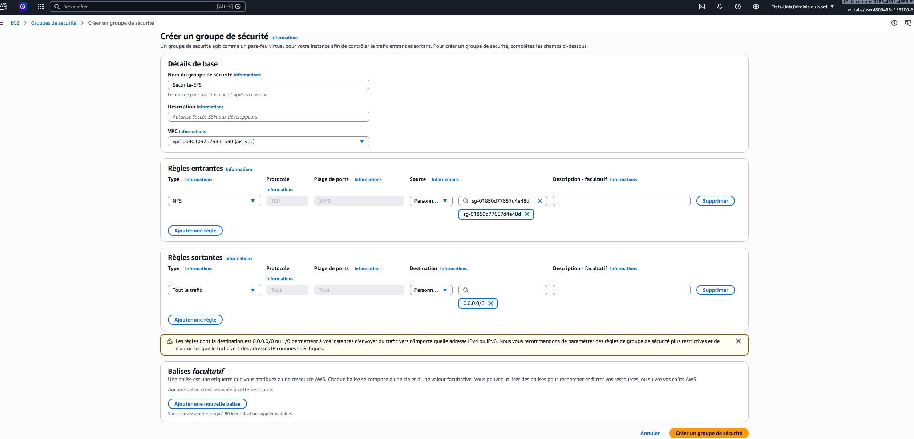
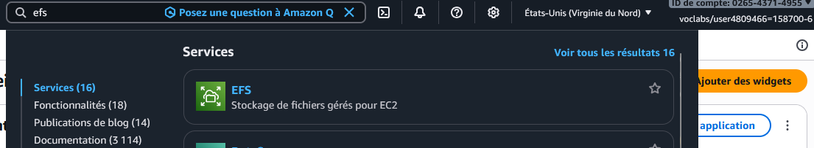
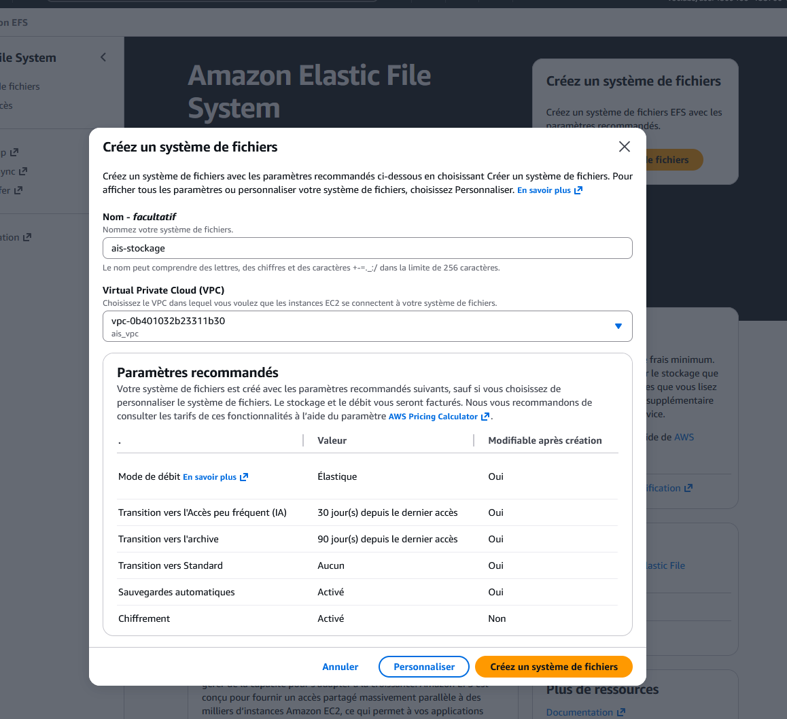
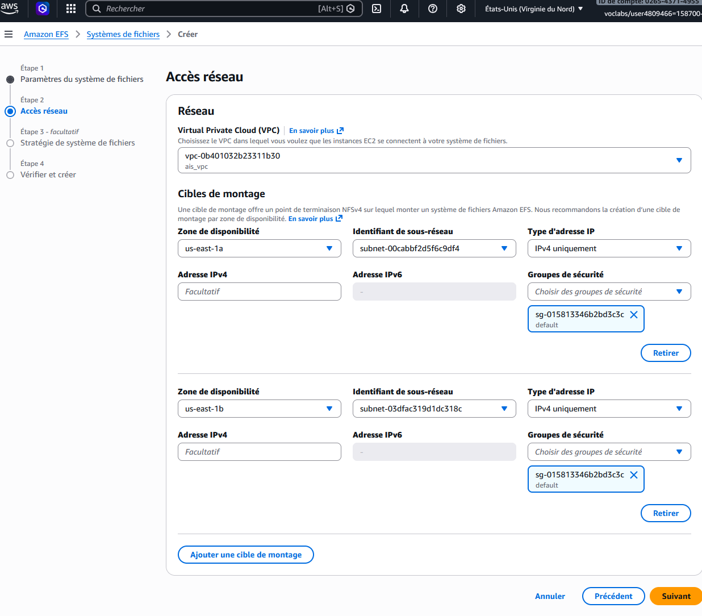
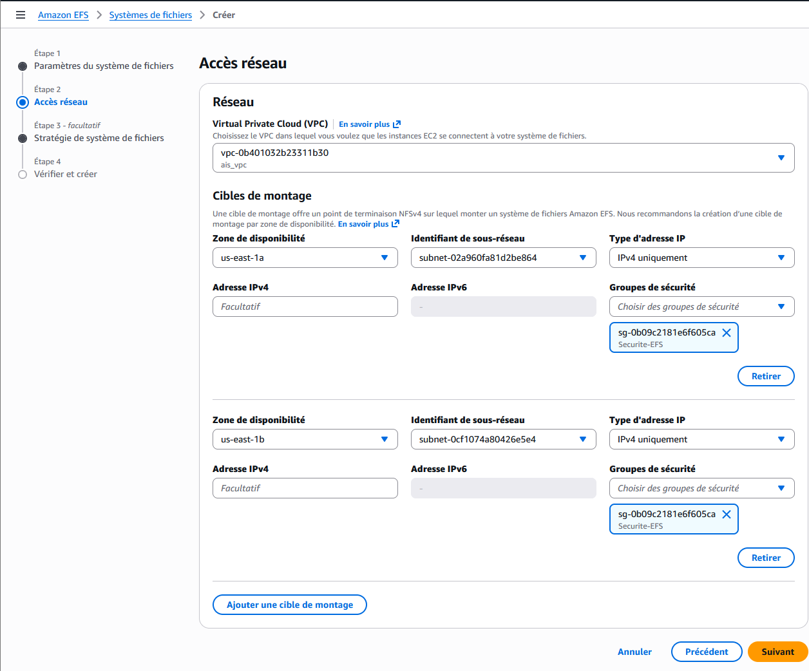
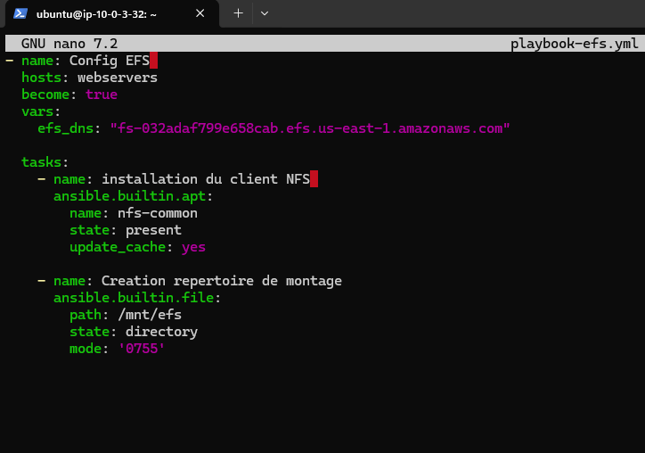
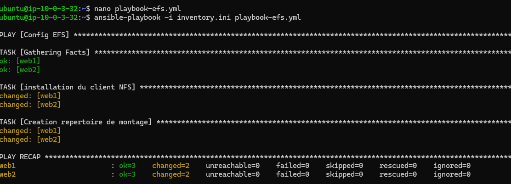
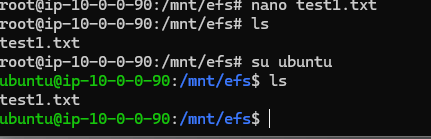
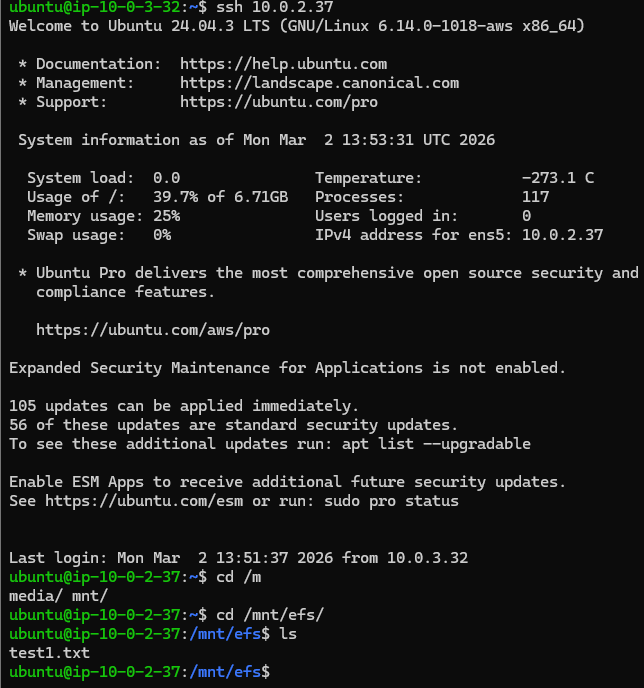

Objectif |
L'objectif de cette mission est de mettre en place une solution de stockage de fichiers distribuée utilisant le service Amazon EFS. Ce stockage doit être monté de manière automatisée sur un parc de serveurs Ubuntu via Ansible, permettant ainsi le partage de données en temps réel entre différentes zones de disponibilité. |
1. Préparation de la sécurité périmétrique
Avant le déploiement du service de stockage, il est nécessaire de définir les règles de flux réseau.
Le service Amazon EFS s'appuie sur le protocole NFSv4.1, utilisant le port standard 2049.
Un groupe de sécurité nommé Securite-EFS est créé au sein du VPC ais_vpc.
Pour garantir une sécurité optimale, la règle entrante n'autorise le port 2049 que si la source appartient
au groupe de sécurité des instances applicatives. Cette méthode
évite l'exposition du stockage à l'ensemble du réseau

2. Initialisation du service Amazon EFS
Concept |
Elastic File System est un stockage de fichiers "multi-attach". Il permet à des instances de lire et d'écrire simultanément sur le même volume. |
Le processus se poursuit par la création du système de fichiers dans la console AWS.

Le système de fichiers est nommé ais-stockage. Les paramètres de performance sont réglés sur
le mode "Élastique" afin de permettre une mise à l'échelle automatique du débit en fonction de la charge.

3. Configuration du réseau et Cibles de Montage
Pour rendre le volume accessible, il convient de déployer des Cibles de montage (Mount Targets) dans les sous-réseaux où résident les instances EC2. Dans le cadre de ce projet, les cibles sont placées dans les réseaux privés des deux zones de disponibilité.

Action Critique |
Par défaut, AWS assigne le groupe de sécurité default. Il est impératif de le remplacer
par le groupe Securite-EFS créé à l'étape 1 pour autoriser les connexions.
|

4. Automatisation du déploiement avec Ansible
Une fois l'infrastructure AWS prête, l'industrialisation du montage sur les serveurs est réalisée via Ansible. Cette approche garantit une configuration identique sur l'ensemble du parc.
Écriture du Playbook
Le fichier playbook-efs.yml est conçu pour installer les dépendances nécessaires
(paquet nfs-common) et créer le répertoire local /mnt/efs qui servira de point d'entrée.

Exécution de la configuration
Le playbook est lancé depuis le Control Node. Ansible se connecte simultanément
aux machines web1 (Zone A) et web2 (Zone B) pour appliquer la configuration.

5. Validation du stockage distribué
Test |
La validation repose sur un test de "lecture croisée" : un fichier écrit sur une machine doit être immédiatement disponible sur toutes les autres. |
Étape 1 : Écriture sur l'instance Node 1 (AZ-a)
Il est procédé à la création d'un fichier nommé test1.txt au sein du point de montage
configuré. Ce fichier est stocké sur l'infrastructure EFS distante et non sur le disque local de l'instance.

Étape 2 : Lecture sur l'instance Node 2 (AZ-b)
En accédant au second serveur, le contenu du répertoire
/mnt/efs est listé. L'apparition immédiate du fichier test1.txt confirme
le bon fonctionnement de la réplication et de la synchronisation du service Amazon EFS.
